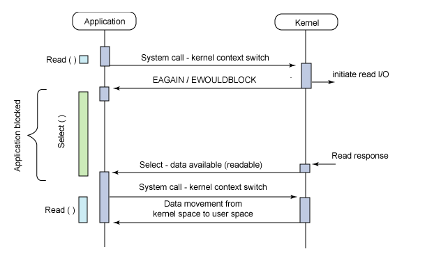

Select

1 | int select(int nfds, fd_set* readfds, fd_set* writefds, fd_set* exceptfds, struct timeval* timeout); |
监控三组descriptor。并且block进程，如果有descriptor数据就绪，则返回。
使用时需要遍历descriptor list。
缺点：
- 每次调用select，需要把fd集合从用户空间拷贝到kernel，开销会随着fd增多而增大。
- 调用select都需要在内核便利传递来的所有fd，开销会随着fd增多增大。
- 支持文件描述符数量较小。
Poll
1 | int poll(struct pollfd* fds, nfds_t nfds, int timeout); |
相对于select的优点：
- 集合了所有descriptor。
- 没有文件描述符数量的限制。
缺点：在fds很大时效率很低。和select没有本质区别。
epoll
1 | int epoll_create(int size); |
每次注册新事件时，会把所有的fd拷贝进内核，因此，每个fd在整个过程中会被拷贝一次。
在epoll_ctl时会把current遍历一遍，为每一个fd制定回调函数。当设备就绪时，回调函数会被call（把就绪的fd加入就绪链表）。
epoll_wait的工作是查看就绪链表，因此不需要每次新设备出现时都便利fd。
mmap：内存映射文件。文件磁盘地址和进程虚拟地址空间中一段虚拟地址一一对应。内核空间对文件的修改直接反应用户空间，可以实现不同进程间的文件共享。
epoll就用了mmap，所以速度会快一些。